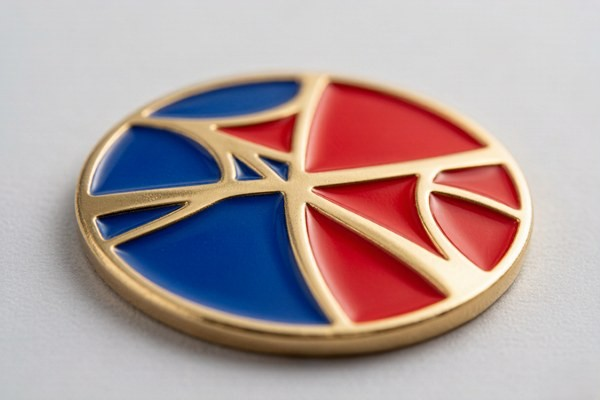
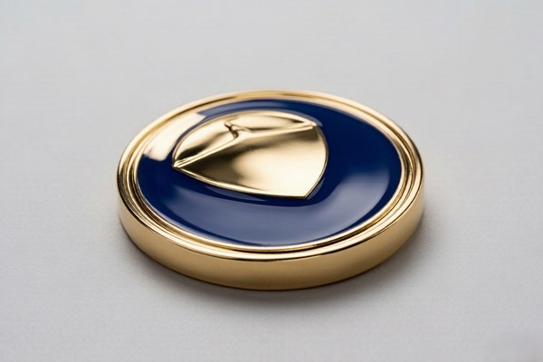

What Is Soft Enamel?
Soft enamel coins are the most widely ordered challenge coin style in the world, and the reason is simple: they offer full color at a friendly price. Each recessed area of the design is stamped into the metal, then filled with colored enamel that sits just below the raised metal ridges. Because the color rests slightly lower than the metal lines that separate it, the surface has a gentle, tactile texture you can actually feel when you run a thumb across it.
That ridged texture is the defining signature of soft enamel. It catches light at slightly different angles, which gives multi-color designs a rich, layered, almost dimensional look. It is also why soft enamel reads so well at a distance — the raised metal lines act like an outline, keeping each color distinct even when a logo is shrunk down to coin scale.
Soft enamel is also the more budget-friendly of the two options. Because the production process is simpler and faster, per-piece pricing comes in lower, which matters a great deal when you are ordering hundreds or thousands of pieces for a team, a unit, or a promotional campaign.
What Is Hard Enamel?
Hard enamel coins take the same colored enamel as soft enamel but fill it completely flush with the metal, then polish the entire surface flat through multiple passes until it is smooth as glass. There are no raised ridges and no recessed wells — just one continuous, glossy surface with a jewelry-grade finish.
The polishing step is what separates hard enamel from soft enamel, and it is also what makes hard enamel more expensive. Filling the enamel flush and then grinding and polishing it flat takes additional labor and time. But the result is a coin that looks and feels premium: the surface is flat, the colors are deep and even, and the finish has a subtle luster that photographs beautifully.
Hard enamel is the go-to choice for executive gifts, awards, and recognition pieces — the kind of coin that gets displayed on a desk, in a case, or on a shelf rather than carried around in a pocket. It reads as more refined and more expensive, which is exactly the impression many brands want to make.
How the Manufacturing Process Differs
Both styles begin the same way: a die is created from your artwork, and molten metal is stamped or cast into the coin's shape. From there, the paths diverge. Understanding the process helps explain why the two finishes cost and feel so differently.
For soft enamel, the process follows a straightforward sequence:
- The recessed areas of the design are stamped into the metal.
- Colored enamel is applied into each recessed well, one color at a time.
- The coin is baked to cure the enamel.
- A final plating (gold, silver, copper, or antique) is applied to the raised metal.
- The coin is cleaned and inspected, leaving the enamel slightly recessed below the metal ridges.
For hard enamel, there are additional finishing steps:
- The recessed areas are filled with enamel flush to the top of the metal.
- The coin is baked to harden the enamel.
- The surface is ground flat to remove any excess enamel.
- The coin is polished through multiple passes until the surface is smooth and glossy.
- A final plating and inspection complete the piece.
That extra grinding and polishing is the single biggest driver of the cost difference. It is also the reason hard enamel has no texture — the polishing literally removes the raised edges that soft enamel keeps.
Texture, Feel, and Look
The easiest way to tell the two apart is to run a finger over the surface. Soft enamel is ridged and tactile — you can feel the metal lines separating each color. Hard enamel is completely smooth, with the color and metal sitting at the same level.
Visually, soft enamel tends to look classic and traditional, with a slightly dimensional, hand-crafted character. Hard enamel looks modern and premium, with a flat, glossy surface that resembles a piece of jewelry. Neither is objectively better — they simply suit different designs and different brands.
A useful rule of thumb: if you want the coin to feel like a traditional, collectible challenge coin, choose soft enamel. If you want it to feel like a high-end lapel pin or a piece of fine jewelry, choose hard enamel.
Durability and Everyday Wear
Both styles are durable, but they wear differently. Hard enamel is more resistant to scratches and scuffs because the flat, polished surface has no raised edges to catch on things. If a coin will be handled constantly — carried in a pocket, passed around a table, or displayed in a high-traffic area — hard enamel holds its appearance longer.
Soft enamel is still plenty durable for everyday use. The recessed enamel is protected by the surrounding metal ridges, and quality soft enamel does not chip or fade under normal handling. However, because the surface is textured, it can collect dust or polish slightly differently over time, and very fine metal ridges can show wear on heavily used coins.
For a keepsake that will sit in a drawer or on a shelf, the difference is negligible. For a coin that will see daily handling, hard enamel is the safer long-term bet.
Color Accuracy and Detail

Both styles support full-color, Pantone-matched enamel, so your brand colors can be reproduced accurately in either finish. The difference is in how the color reads. Soft enamel's recessed wells give color a slightly dimensional, layered quality. Hard enamel's flat polish makes color look deep, even, and uniform — closer to how it would appear printed on paper.
For fine detail and small text, hard enamel often has a slight edge, because the flat surface removes the visual noise of the raised metal lines. For bold, high-contrast designs with several colors, soft enamel's metal outlines can actually improve readability. The right choice depends on the density of your artwork.
The History of Soft and Hard Enamel
Enameling is one of the oldest decorative arts, with roots stretching back thousands of years, and both soft and hard enamel are modern descendants of that tradition. Soft enamel, with its recessed color, is the older and simpler technique, and it became the standard for challenge coins because it could be produced quickly and affordably at scale. Its textured, traditional character is part of why it remains so widely used today.
Hard enamel, with its flush fill and polished surface, is a more refined development, borrowed from the world of fine jewelry and lapel pins, where a smooth, glass-like finish has long been associated with quality. As challenge coins grew beyond their military origins and into the corporate and awards markets, hard enamel's premium look found a natural home.
Understanding this lineage helps explain the personalities of the two styles: soft enamel carries the rugged, traditional spirit of the classic challenge coin, while hard enamel carries the polished, refined spirit of fine jewelry. The choice between them is as much about the story you want the coin to tell as it is about the technical differences.
Soft and Hard Enamel Across Coin Categories
The two styles show up in different places across the challenge coin world. Soft enamel dominates military, law enforcement, and organizational coins, where the traditional look and lower cost align with large-quantity orders. It is also the standard for promotional and giveaway coins, where budget is usually the deciding factor.
Hard enamel, by contrast, dominates the awards, executive gifts, and recognition categories, where the premium finish matches the occasion. It is also popular for brand coins where a polished, jewelry-like presentation matters — a hard enamel coin photographed next to a product looks more like a luxury detail than a promotional item. Knowing which category your coin falls into often points the way to the right finish.
Cost and Production Time
Soft enamel is generally the more affordable option, often by a meaningful margin on larger orders. Hard enamel costs more because of the extra filling, grinding, and polishing steps. Both ship within roughly the same production window, though hard enamel's additional finishing can add a couple of days to the schedule.
If budget is the primary constraint, soft enamel almost always wins. If the goal is a premium, display-worthy piece and the budget allows, hard enamel delivers a noticeably more refined result.
Plating Options and How They Pair
The metal plating on a challenge coin is a finishing step that works hand in hand with the enamel style, and it changes the overall look more than most people expect. The most common platings are gold, silver, copper, antique gold, antique silver, antique copper, and black nickel, each of which casts a different mood over the design.
Bright gold and bright silver plating read as clean and modern, and they pair especially well with hard enamel's glossy surface. Antique finishes, which are chemically darkened to sit in the recesses, emphasize the raised metal ridges of soft enamel and give the coin a traditional, aged character. Black nickel plating creates a dramatic, tactical look that works with either style but is especially striking against light enamel colors.
A useful way to think about it is that the plating sets the frame while the enamel fills the picture. Soft enamel's texture benefits from antique plating that highlights the ridges, while hard enamel's flat surface benefits from bright plating that reflects light evenly. There is no wrong combination, but a little thought here can elevate a coin from good to memorable.
Caring for Your Challenge Coin
Both soft and hard enamel coins are low-maintenance, but a few habits will keep them looking their best. Store coins in a pouch, case, or individual sleeve to prevent them from rubbing against other coins and scratching. If a coin gets dirty, wipe it gently with a soft, dry cloth — avoid abrasive cleaners, which can dull the plating.
Hard enamel's flat surface is more forgiving of occasional handling, but it can still show fingerprints on very glossy finishes. A quick wipe restores the shine. Soft enamel, with its recessed color, rarely shows fingerprints but can collect dust in the recesses; a soft brush lifts it out easily. Neither style needs special treatment beyond common sense.
Common Misconceptions About Enamel
A few myths about enamel circulate among first-time buyers, and clearing them up early saves confusion later:
- Myth: hard enamel is always better. In reality, each style suits different designs and budgets — neither is objectively superior.
- Myth: soft enamel chips easily. Quality soft enamel is recessed below the metal ridges, which actually protects it from daily wear.
- Myth: the color fades quickly. Both styles are baked and plated to resist fading under normal conditions.
- Myth: you cannot mix finishes. While a coin is one enamel style, you can freely mix platings, antique effects, and enamel colors within a design.
When to Choose Soft Enamel

Soft enamel is the right call in most of these situations:
- You are ordering a large quantity and want to keep per-piece cost down.
- You want a traditional, textured challenge coin feel.
- Your design has bold, multi-color artwork that benefits from metal outlines.
- The coins will be traded, handed out, or carried casually.
- You want a fast, straightforward production process.
When to Choose Hard Enamel
Hard enamel is the better choice when:
- You want a premium, jewelry-like finish for awards or executive gifts.
- The coin will be displayed rather than carried.
- Your design has fine detail or small text that benefits from a flat surface.
- You want maximum scratch resistance for heavy handling.
- You are willing to pay a bit more for a higher-end result.
Which Style Photographs Better?
If your coin will be photographed — for a website, a product catalog, or social media — the finish makes a real difference in how it shoots. Hard enamel's flat, glossy surface reflects light evenly and produces clean, sharp product photos with minimal effort. The smooth surface has no texture to catch stray shadows, so it photographs consistently from nearly any angle.
Soft enamel, with its recessed color and raised ridges, is more demanding to photograph well. The texture creates subtle shadows that can look beautiful and dimensional in the right light, but it can also look uneven if the lighting is flat or harsh. A skilled product photographer can make either style look great, but hard enamel is generally the easier subject.
If photography is a priority — for an e-commerce listing, a press kit, or a brand launch — it is worth factoring this in. Hard enamel tends to give you more predictable, polished images straight out of the camera, while soft enamel rewards a bit more care and intentional lighting.
Choosing for Large Orders vs. Small Keepsakes
Order volume often tips the decision. For a large run — hundreds or thousands of pieces for a team, a unit, or a promotional campaign — soft enamel's lower per-piece cost adds up to meaningful savings, and the classic look is usually exactly what a large group wants. Soft enamel is the workhorse choice for volume.
For a small run of keepsakes, awards, or executive gifts, the calculus flips. When you are ordering a handful of premium pieces, the cost difference between soft and hard enamel is small in absolute terms, and the more refined finish of hard enamel is often worth it. If the coin is meant to impress a few important people, hard enamel is the natural choice.
There is also a middle path: many buyers use soft enamel for the bulk order and order a smaller, hard enamel version of the same design as a special presentation piece. It is a nice way to give the design both a workhorse edition and a premium edition.
Getting Samples of Both Styles
The surest way to choose between soft and hard enamel is to feel both in your hand, and a good manufacturer makes that easy. Ask for a free digital proof in both styles — most factories will happily show you the same design rendered two ways so you can compare the look side by side before you commit.
For a small fee, you can often order physical samples of each style as well, which is the gold standard for a final decision. Holding a soft enamel coin and a hard enamel coin side by side makes the difference immediately obvious in a way that a screen never quite captures. If you are on the fence, samples are worth the small investment.
How Manufacturers Ensure Color Consistency
One of the things that separates a quality enamel coin from a mediocre one is color consistency, and it is worth understanding how a good manufacturer achieves it. The key is Pantone matching: rather than describing colors loosely, a professional factory matches each enamel to an exact Pantone reference, which removes ambiguity and ensures the finished coin matches your brand or unit colors precisely.
Beyond matching, a good manufacturer also controls the enamel fill carefully. In soft enamel, the depth of the fill affects how the color reads, and inconsistent filling shows up as uneven color across the coin. In hard enamel, the polishing step must be even so the color looks uniform from edge to edge. These are the details that separate a crisp, professional coin from one that looks slightly off.
When you receive your digital proof, pay attention to the colors and flag anything that looks even slightly wrong — this is exactly the moment to catch a mismatch before production. A manufacturer that takes color seriously will be happy to adjust and match your reference exactly.
Soft vs Hard Enamel: At a Glance
| Feature | Soft Enamel | Hard Enamel |
|---|---|---|
| Surface | Ridged and tactile | Smooth and glossy |
| Feel | Textured, dimensional | Flat, glass-like |
| Cost | More affordable | Higher |
| Durability | Durable | Scratch-resistant |
| Look | Classic and traditional | Premium and modern |
| Best for | Bulk orders, teams, units | Awards, executive gifts |
Ready to Design Your Custom Coins?
Get a free quote and digital proof in 12 hours. Our team will help you refine your design for the best possible result.
Get Free QuoteFrequently Asked Questions
Which is more popular, soft enamel or hard enamel?
Soft enamel is more popular overall because it offers full color at a lower cost, which makes it the default choice for most team, unit, and promotional orders.
Can I combine soft and hard enamel on one coin?
Generally no — a single coin is finished in one style or the other, because the filling and polishing processes are different. If you want contrast, you can mix metal plating and antique finishes instead.
Do hard enamel coins scratch easily?
No. Hard enamel is more scratch-resistant than soft enamel because the flat, polished surface has no raised ridges to catch on things.
Will my colors look different between the two styles?
The Pantone color is the same, but the finish changes how it reads. Soft enamel looks slightly layered and dimensional; hard enamel looks deeper and more uniform.
Conclusion
Choosing between soft enamel and hard enamel comes down to one trade-off: texture and cost on one side, smoothness and premium feel on the other. If you want a classic, affordable coin that feels like a traditional challenge coin, choose soft enamel. If you want a polished, display-worthy piece that reads as high-end, choose hard enamel.
Still not sure? Send us your design and we will show you a free digital proof in both styles, side by side, so you can decide with your eyes instead of a spec sheet. Get your free proof here — there is no minimum order and no obligation.
Whichever finish you choose, the decision is worth making deliberately, because it shapes how the coin feels in the hand and how it reads when photographed or displayed. A quick side-by-side look at both proofs is the fastest way to land on the right answer, and it costs you nothing.
Take your time with the choice — it is one of the few decisions that shapes both the look and the feel of the finished coin.